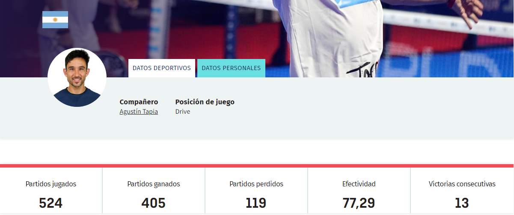

<<<<<<< HEAD
Carlos Daniel Gutiérrez Amaya
Ocupa la 5ª plaza en el ranking World Padel Tour.
- Nacimiento: 15 de junio de 1984 (edad 38 años), Ciudad de San Luis, Argentina
- Estatura: 1,77 m
- Apodo(s): El Mago

=======
Carlos Daniel Gutiérrez Amaya
Ocupa la 5ª plaza en el ranking World Padel Tour.
- Nacimiento: 15 de junio de 1984 (edad 38 años), Ciudad de San Luis, Argentina
- Estatura: 1,77 m
- Apodo(s): El Mago
>>>>>>> b743b9d (Agregar Video de ultimas noticias desde youtube al codigo de AleGalan y Chingotto, ademas de agregaron divisiones y encabezados al index y estos dos)